ARM Cortex M Hardfault Handling
ARM Cortex M Hardfault Handling#
Draft Status
This page is a public collection of my raw, unorganized notes on this topic.
It is not a polished article. The content and any links are subject to change without notice. Please check back for the final version.
ARM Cortex M3 Hardfault Handling#
7.1 Overview of exceptions and interrupts
The Cortex-M3 and Cortex-M4 NVIC supports up to 240 IRQs (Interrupt Requests), a Non-Maskable Interrupt (NMI), a SysTick (System Tick) timer interrupt, and a number of system exceptions.
Exceptions are numbered 1-15 for system exceptions and 16 and above for interrupt inputs
The exception number is used as the identification for each exception and is used in various places in the ARMv7-M architecture. For example, the value of the currently running exception is indicated by the special register Interrupt Program Status Register (IPSR), or by one of the registers in the NVIC called the Interrupt Control State Register (the VECTACTIVE field)
Ref: The Definitive Guide to ARM® CORTEX®-M3 and CORTEX®-M4 Processors, Chapter 7, Page 230
IPSR is one of the register from the xPSR
4.5.1 What are exceptions?
Reset is a special kind of exception. When the processor exits from a reset, it executes the reset handler in Thread mode (rather than Handler mode as in other exceptions). Also the exception number in IPSR is read as zero.
Ref: The Definitive Guide to ARM® CORTEX®-M3 and CORTEX®-M4 Processors, Chapter 4, Page 106
10.3 SVC exception
When the SVC handler is executed, you can determine the immediate data value in the SVC instruction by reading the stacked Program Counter (PC) value, then reading the instruction from that address and masking out the unneeded bits. However, the program that executed the SVC could have either been using the main stack or the process stack. So we need to find out which stack was used for the stacking process before extracting the stacked PC value.
Ref: The Definitive Guide to ARM® CORTEX®-M3 and CORTEX®-M4 Processors, Chapter 10, Page 332
4.2.2 link register (LR)
During exception handling, the LR is also updated automatically to a special EXC_RETURN (Exception Return) value, which is then used for triggering the exception return at the end of the exception handler.
Ref: The Definitive Guide to ARM® CORTEX®-M3 and CORTEX®-M4 Processors, Chapter 4, Page 80
When returning from an exception, such as pop {r7, pc} or bx lr causes jump to EXC_RETURN whose value is 0xFFFFFFxx. Based on the pattern of EXC_RETURN it pops the saved state from the stack, restores the PC to interrupted instruction, restores xPSR and other registers saved during exception entry
7.7.3 Exception handler execution
At the end of the exception handler, the program code executes a return that causes the EXC_RETURN value to be loaded into the Program Counter (PC). This triggers the exception return mechanism.
Ref: The Definitive Guide to ARM® CORTEX®-M3 and CORTEX®-M4 Processors, Chapter 7, Page 251
Read Chapter 8 Exception Handling in Detail for details.
4.2.3 Special Registes
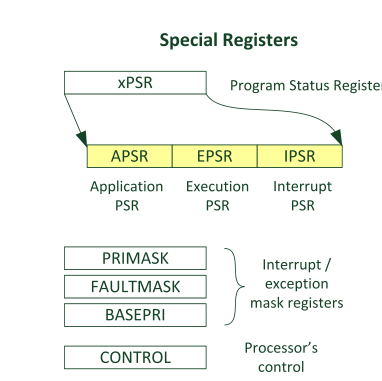
31 |
30 |
29 |
28 |
27 |
26:25 |
24 |
23:20 |
19:16 |
15:10 |
9 |
8:0 |
|
|---|---|---|---|---|---|---|---|---|---|---|---|---|
xPSR |
N |
Z |
C |
V |
Q |
ICI/IT |
T |
GE* |
ICI/IT |
Exception Number |
Ref: The Definitive Guide to ARM® CORTEX®-M3 and CORTEX®-M4 Processors, Chapter 4, Page 82, Figure 4.6
Fault status registers#
Ref: 12.4 Fault status registers and fault address registers, The Definitive Guide to ARM® CORTEX®-M3 and CORTEX®-M4 Processors, Page 386
HFSR (HardFault Status Register)#
HFSR is Hard Fault status register which gives hint to the cause of Hard fault
Located at 0xE000ED2C and can be access via SCB->HFSR when using CMSIS Pack
Bits |
Name |
Type |
Reset Value |
Description |
|---|---|---|---|---|
31 |
DEBUGEVT |
R/Wc |
0 |
Indicates hard fault is triggered by debug event |
30 |
FORCED |
R/Wc |
0 |
Indicates hard fault is taken because of bus fault, memory management fault, or usage fault |
29:2 |
– |
– |
– |
– |
1 |
VECTBL |
R/Wc |
0 |
Indicates hard fault is caused by failed vector fetch |
0 |
– |
– |
– |
– |
CFSR (Configurable Fault Status Register)#
Hint information for causes of fault exceptions
Address:
0xE000ED28It is further subdivided into 3 parts CFSR (Configurable Fault Status Register, atSCB->CFSR) → 32 bits:Bits [0–7] : MMFSR (MemManage Fault Status Register)
Bits [8–15]: BFSR (BusFault Status Register)
Bits [16–31]: UFSR (UsageFault Status Register)
MMFAR (0xE000ED34) → faulting address for MemManage#
BFAR (0xE000ED38) → faulting address for BusFault#
Example Scenario:#
Hardfault with HFSR: 0x 4000 0000
Bit 30 is 1 i.e. it is a Forced.
This means the HardFault is not direct, but an escalation from another fault type (MemManage, BusFault, UsageFault) that was either:
Disabled, or
Had lower priority, so it escalated to HardFault.
Reading CFSR: 0b 0000 0000 0000 0000 1000 0010 0000 0000
This points to Bus Fault as bits 8:15 have values set.
CFSR’s bit 15 states BFAR (Bus fault address register is valid)
CFSR’s bit 9 states BFAR (Precise data bus error on a load/store)
Reading BFAR: 0x 4002 1018 which is RCC_APB2ENR
This register on STM32F1 is used to enable/disable clocks for peripherals on APB2 (in my case USART1)
ARM Cortex-M CPUs#
Important Slides: Introduction to ARM Systems-11-12-2012.pptx
3. The STM32L476 microcontroller — Embedded Systems II documentation
An architecture is a specification to what all functionality a processor must have. Micro-Architecture is the actual implementation of it.
Eg: Mv6,v7,v8 defines what cpu should do how it should behave. The implementation looks like Cortext-M3,M4, M23, M33
ARM CPUs are based on the load/store architecture which is also RISC architecture
ARM TDMI 7 -> 7th version of the 32bit architecture.
A class: application grade, can run high level operating systems.
ARM v8 A class -> 64 bit CPUs Now knows as AArch64 architecture.
ARM M class: for simple state machines, microcontrollers
Class R: Real time systems, deterministic system, eg: ECU
{kind=link}
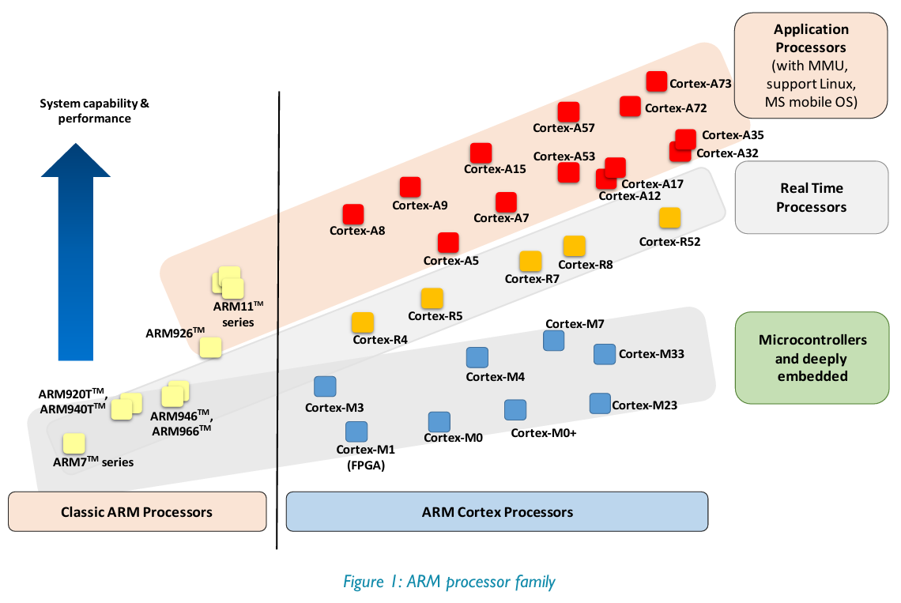
{kind=link}
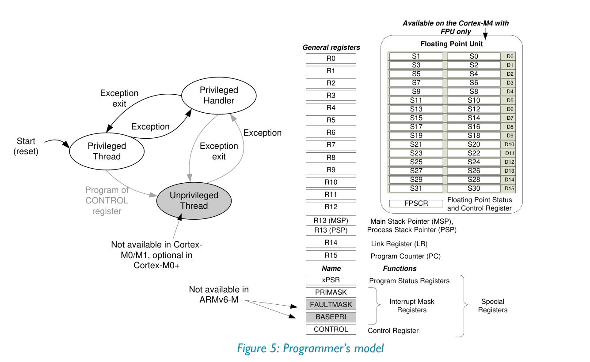
16 General purpose registers.
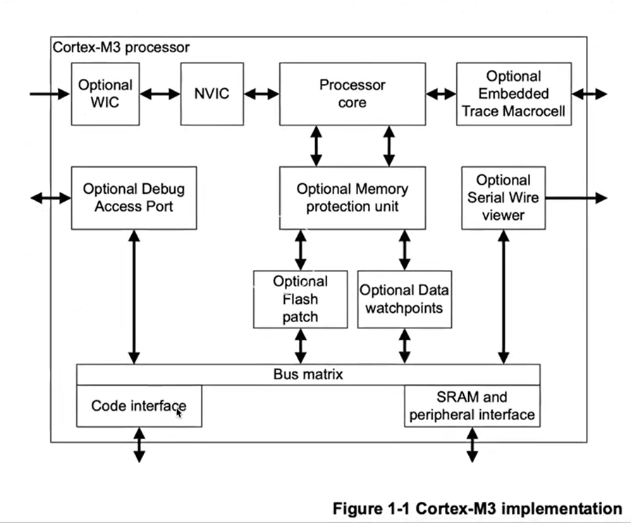
WIC: wake-On Interrupt controller
MPU: memory protection unit
NVIC: Nested Vector Interrupt Controller
{kind=link}
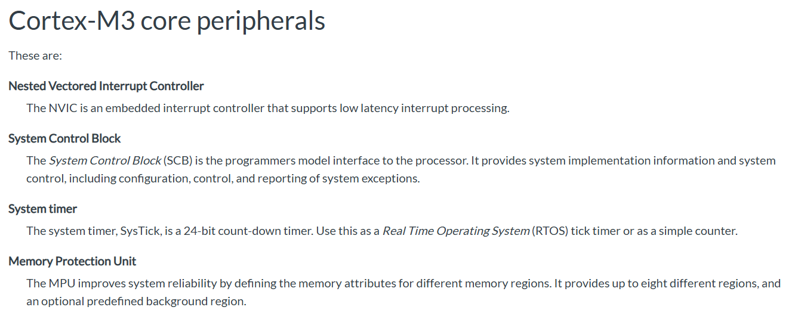
{kind=link}
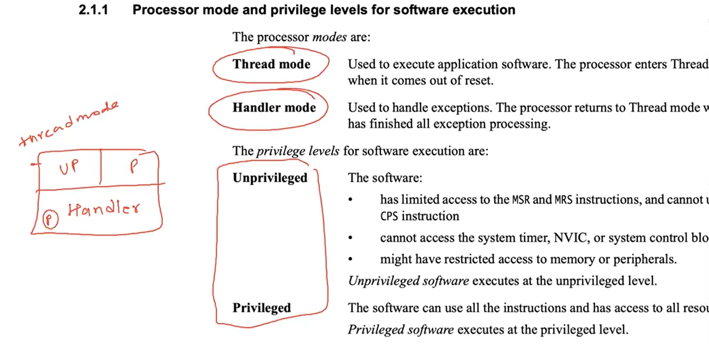
CPU starts in Thread Mode - Privileged
Stacks#
Handler mode is where interrupts are handled
2 registeres for 2 potential stacks: MSP (main stack pointer) and PSP (process stack pointer)
CPU boots using the MSP
Handler Mode uses MSP only
Privileged Thread Mode can use PSP or MSP, Unprivilegedd uses PSP
{kind=link}
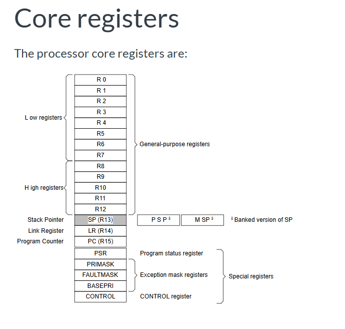
The Program Status Register (PSR) in Cortex M combines:
Application Program Status Register (APSR)
Interrupt Program Status Register (IPSR)
Execution Program Status Register (EPSR).
Reference
Might be useful: embedded - ARM Cortex M3 How do I determine the program counter value before a hard fault? - Stack Overflow
There are 16 Expections. and after then rest are all interrupts.
{kind=link}
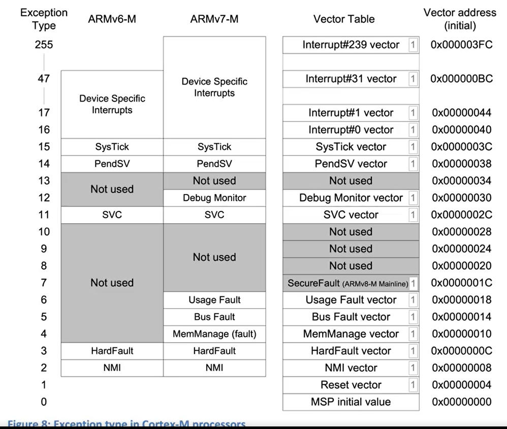
Ref: ARM Cortex-M for Beginners
{kind=link}
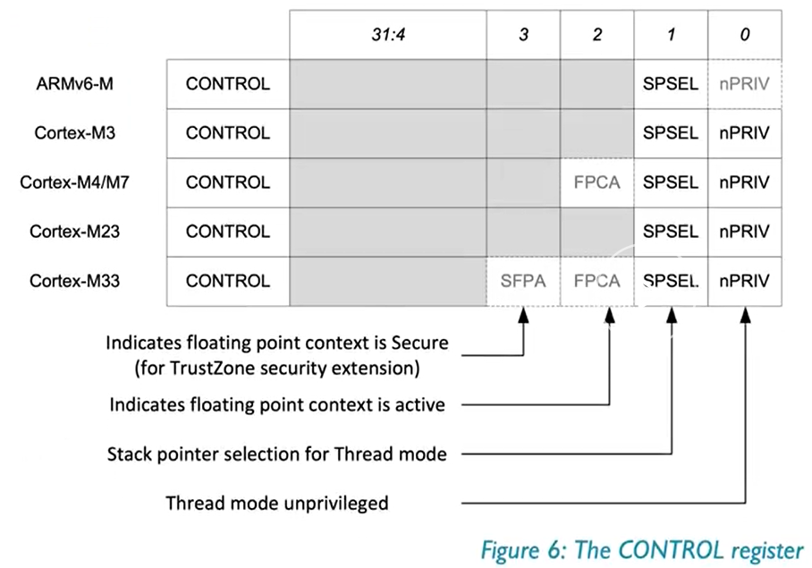
{kind=link}
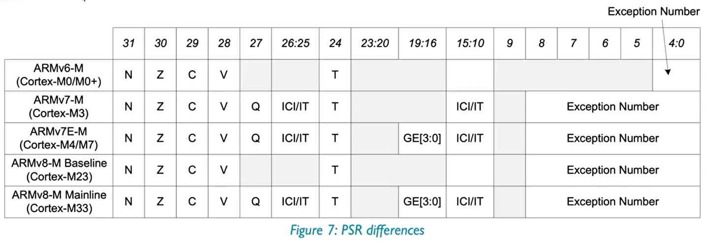
{kind=link}
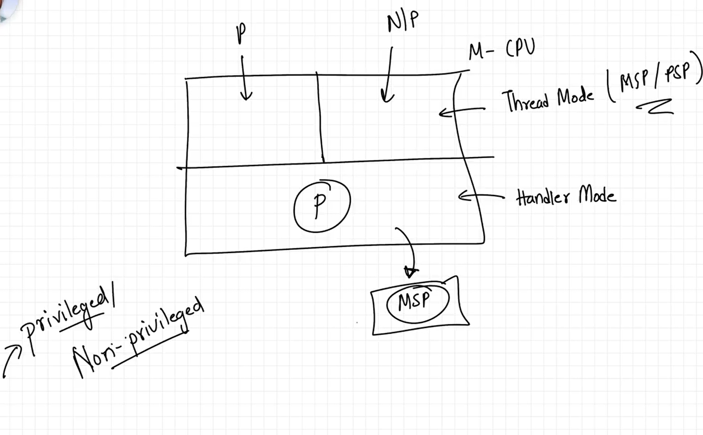
{kind=link}
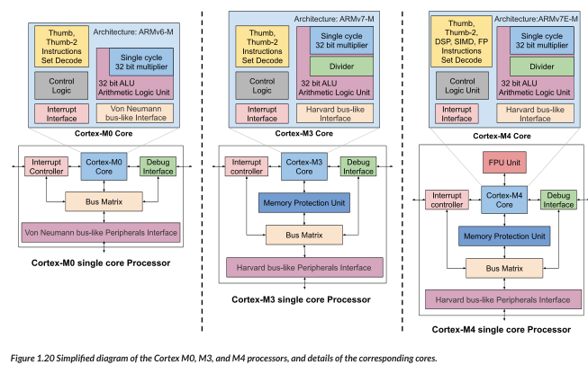
Assembly#
Plain text file
Extension:
.s: pre-processor is not run
.S: pre-processor is run on this file
In file you have: directives, labels, comments and instructions
Directives: mostly starts with a dot (
.). Hints for the assemblyLabels: anything that has a colon (
:) in the end. It is a human-readable name to a location.
Example:
.section .vectors
vector_table:
.word 0xABCD
.word reset_handler
.zero 400
.section .text
.aign 1
.type reset_handler, %function
reset_handler:
mov r1, #0x7
mov r2, #0x3
add r3, r1, r2
bl .
Instructions in ARM Cortex-M3#
MRS#
Move the contents of a special register to a general-purpose register.
MRS{cond} Rd, spec_reg
MSR#
Move the contents of a general-purpose register into the specified special register.
MSR{cond} spec_reg, Rn
spec_reg can be any of: APSR, IPSR, EPSR, IEPSR, IAPSR, EAPSR, PSR, MSP, PSP, PRIMASK, BASEPRI, BASEPRI_MAX, FAULTMASK, or CONTROL.
Hello World#
Using device STM32F100RBT6, see STM32F100xx manual
The Flash starts at 0x8000 0000, and SRAM starts at 0x2000 0000
Therefore, the linker script will be:
ENTRY(reset_handler)
MEMORY
{
FLASH (rx) : ORIGIN = 0x08000000, LENGTH = 128K
}
SECTIONS
{
.text :
{
KEEP(*(.isr_vector))
*(.text)
} >FLASH
}
_estack = 0x20000800;
PROVIDE(_estack = 0x20000800);
startup.c
const uint32_t isr_vectors[] __attribute__((section(".isr_vector"))) = {
(uint32_t)&_estack,
(uint32_t) reset_handler, /* code entry point */
(uint32_t) nmi_handler,
(uint32_t) hardfault_handler,
(uint32_t) memmanage_handler,
(uint32_t) busfault_handler,
(uint32_t) usagefault_handler,
0,
0,
0
};
main.c
#include <stdint.h>
#include "reg.h"
#define USART_FLAG_TXE ((uint16_t) 1 << 7)
#define USARTx USART1
#define USARTx_SR USART1_SR
#define USARTx_DR USART1_DR
#define USARTx_CR1 USART1_CR1
int puts(const char *str)
{
while (*str) {
while (!(*(USARTx_SR) & USART_FLAG_TXE));
*(USARTx_DR) = *str++ & 0xFF;
}
return 0;
}
void main(void)
{
*(RCC_APB2ENR) |= (uint32_t) (0x00000001 | 0x00000004);
*(RCC_APB1ENR) |= (uint32_t) (0x00020000);
/* USARTx Configuration */
*(GPIOA_CRL) = 0x00004B00;
*(GPIOA_CRH) = 0x44444444;
*(USARTx_CR1) = 0x0000000C;
*(USARTx_CR1) |= 0x2000;
puts("Hello World!\n");
while (1);
}
{kind=link}
{kind=link}
Enabling stdio (fgets, printf) on Bare-metal STM32 with Newlib-nano#
Objective: Use
fgets()andprintf()over UART in a bare-metal STM32 project usingnewlib-nano.
Linker and Compiler Setup#
Used
arm-none-eabi-gccinstead oflddirectly.Removed
-nostdlibto allow standard libc dependencies.Used flags:
-mcpu=cortex-m3 -mthumb -mfloat-abi=soft
-nostartfiles --specs=nano.specs -lc -lnosys
-Wl,-Tlinker.ld,--print-memory-usage,-Map=kernel.map
UART I/O Functions#
Implemented minimal UART functions for newlib-nano hooks:
int __io_putchar(int ch) {
while (!(*USARTx_SR & USART_FLAG_TXE));
*USARTx_DR = ch & 0xFF;
return ch;
}
int __io_getchar(void) {
while (!(*USARTx_SR & USART_FLAG_RXNE));
return *USARTx_DR & 0xFF;
}
Syscalls Implementation#
Defined _read() to hook fgets():
int _read(int file, char *ptr, int len) {
int i;
for (i = 0; i < len; ++i) {
ptr[i] = __io_getchar();
if (ptr[i] == '\n' || ptr[i] == '\r') break;
}
return i;
}
Linked with -lc -lnosys.
Runtime Behavior#
fgets()worked after correctly linking and implementing_read.Needed to disable buffering for
stdout:
setvbuf(stdout, NULL, _IONBF, 0);
This ensures immediate UART output with printf().
char RxBuf[32];
setvbuf(stdout, NULL, _IONBF, 0);
while (1) {
if (fgets(RxBuf, sizeof(RxBuf), stdin)) {
printf("Received: %s\n", RxBuf);
}
}
Something about addr2line that I do not understand#
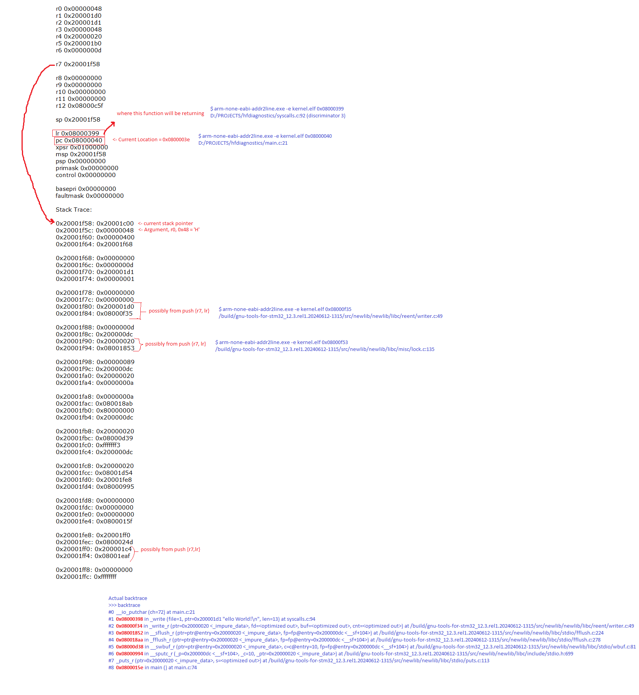
addr2line (AI Generated)
You ran:
x/x 0x080001f4
Got:
0x080001f4 <uart_init+72>: 0x40021018
And:
addr2line 0x080001f4
→ points to end of uart_init
Why this happens:
Literal Pools in ARM/Thumb:
ARM stores constants (like peripheral addresses) near code in Flash.
These are not instructions — they’re just data embedded in the
.textsection.Placed usually at the end of a function (or sometimes in-between if needed).
Disassembler confuses literal as code:
addr2lineassumes all.textis code, not data.So it maps
0x080001f4to the last instruction ofuart_init, even though it’s actually a literal constant used earlier.
What’s really at 0x080001f4:
A 32-bit value:
0x40021018 → some peripheral register (likely RCC or similar on STM32)
Conclusion:
0x080001f4is a literal (constant address) stored in Flash.GDB disassembled it correctly.
addr2linedoesn’t differentiate between code and data in.text.This is normal and expected behavior in ARM systems using literal pools.
Calling convention#
I have notices different function prologues and epilogues at different functions
assembly - What registers to save in the ARM C calling convention? - Stack Overflow
See AAPCS (ARM Architecture Procedure Call Standard) docs at abi-aa/aapcs32/aapcs32.rst at main · ARM-software/abi-aa
Check if inside an ISR#
bool memfault_arch_is_inside_isr(void) {
// We query the "Interrupt Control State Register" to determine
// if there is an active Exception Handler
volatile uint32_t *ICSR = (uint32_t *)0xE000ED04;
// Bottom byte makes up "VECTACTIVE"
return ((*ICSR & 0xff) != 0x0);
}
Notes from ARM System Developer’s Guide: Designing and Optimizing System Software - Andrew Sloss, Dominic Symes, Chris Wright#
{kind=link}
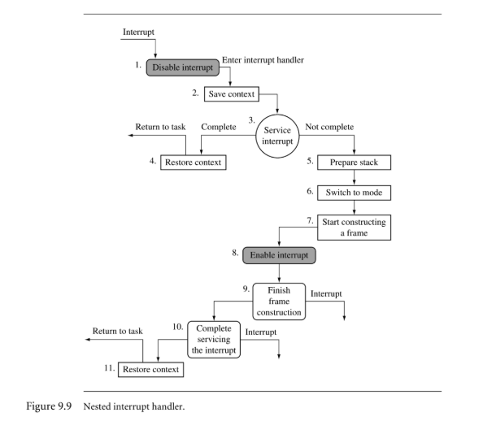
{kind=link}
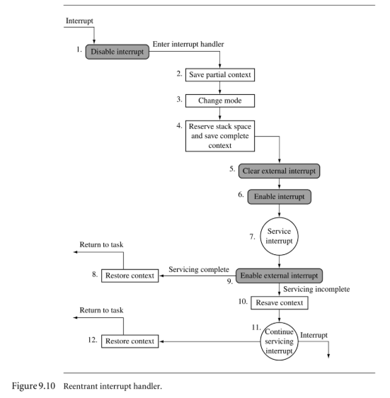
Pipelining (AI Generated)
Pipelining means splitting instruction execution into smaller stages (fetch, decode, execute, etc.) so multiple instructions are in different stages at once.
Example: While instruction A is being executed, instruction B can be decoded, and instruction C can be fetched — all in the same clock cycle.
“Pipeline advances by one step on each cycle” means that in the best case, every clock tick pushes each instruction to the next stage — so one instruction finishes every cycle (max throughput).
“Decoded in one pipeline stage” → ARM’s simpler RISC instructions are designed so decoding is quick and predictable, done in a single stage, unlike some CISC CPUs that need more complex decoding.
“No microcode” → In CISC processors (like x86), a single complex instruction might be internally translated into several simpler “micro-ops” by running a small microprogram (microcode). ARM avoids this — instructions map directly to hardware actions, which makes them faster and simpler to pipeline.
In short: ARM’s RISC design means each instruction flows directly through the pipeline without microcode translation, making execution more predictable and efficient.
{kind=link}
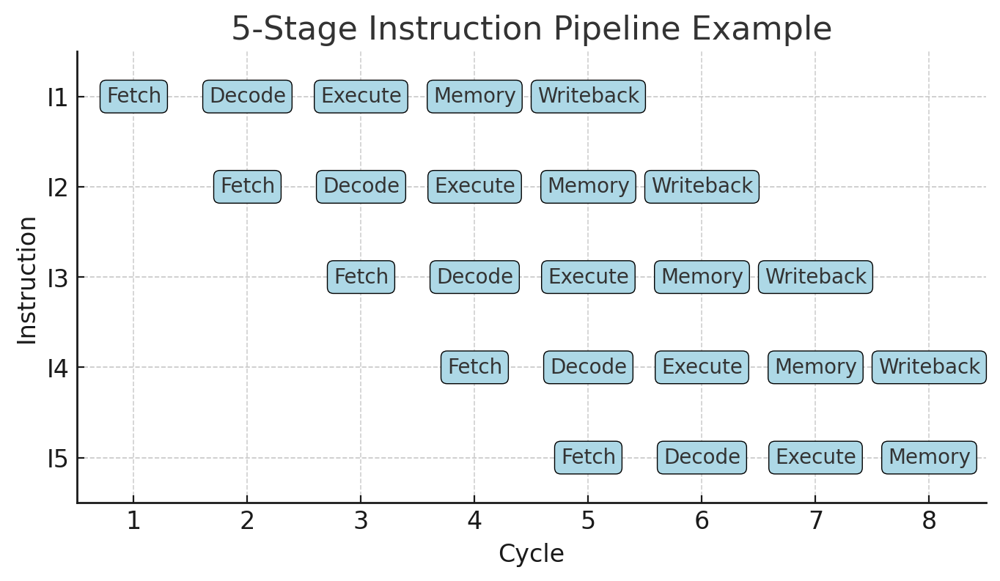
Microcode (AI Generated)
In a CISC CPU (like x86), microcode is a hidden layer of firmware inside the processor that translates complex instructions into a sequence of simpler, internal operations (micro-operations or micro-ops) that the hardware can actually execute.
Why it exists in CISC:
CISC ISAs often have instructions that are:
Multi-step (e.g.,
MOVSwith memory-to-memory move, orREP MOVSBto copy a block)Conditional or variable-length in execution
Architecturally specified long before modern microarchitectures existed (for backward compatibility)
Since these instructions can’t be directly hardwired into a simple datapath, the CPU stores a microprogram in ROM-like storage inside the chip.
When the CPU sees such an instruction, it:
Uses the opcode to look up a microcode entry.
Runs the microcode sequence (like a tiny program) to orchestrate internal hardware: ALUs, registers, buses, memory accesses.
Example (x86)
LODSB ; Load byte from [SI] into AL, increment SI
Internally might become micro-ops like:
uop1: Read from memory at SI into temp_reg
uop2: Move temp_reg to AL
uop3: Increment SI
These uops are executed by the pipeline as if they were normal simple instructions.
ARM’s RISC difference:
ARM avoids microcode for regular instructions — each instruction directly corresponds to a fixed set of hardware control signals that can be triggered in one or a few cycles. No “hidden” microprogram is needed for decoding.
So when the book says “no need for microcode”, it’s highlighting that ARM avoids this translation layer — which makes the pipeline simpler, faster, and more predictable.
{kind=link}
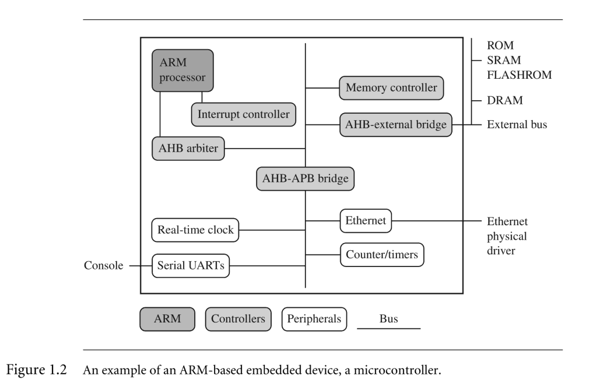
Inline Barrel Shifter (AI Genrated)
This is about one of ARM’s classic RISC “superpowers” — the inline barrel shifter.
What it is:
A barrel shifter is hardware that can shift or rotate a binary value by any number of bits in a single cycle.
Why “inline”:
In ARM, the barrel shifter is built into the datapath before the ALU. This means that for most ALU instructions, one operand can be shifted or rotated automatically before the arithmetic/logic is done — without using a separate instruction.
Example (simplified):
ADD R0, R1, R2, LSL #3
Meaning:
R0 = R1 + (R2 << 3)
Here, (R2 << 3) is done by the inline barrel shifter inside the same ADD instruction, so no extra LSL instruction is needed.
Effect on “more complex instructions”:
A single ARM instruction can do two things: shift/rotate + arithmetic/logic.
This makes the instruction set more powerful without being true CISC — still fixed length, still single-cycle decode.
Benefits:
Performance: fewer instructions to execute.
Code density: smaller program size since shifts are “free” inside many instructions.
Interrupt Controller (AI Generated)
1. Standard interrupt controller vs. Vector Interrupt Controller (VIC)
Standard interrupt controller
Collects interrupt requests from peripherals.
Signals the CPU with a single “IRQ” line.
CPU must run common ISR entry code, then read a status register to figure out which device caused the interrupt.
More software work → slightly slower.
Vector Interrupt Controller (VIC)
Each interrupt source is assigned a unique vector address in hardware.
When an interrupt happens, the VIC directly provides the CPU with the address of the correct ISR.
No extra software dispatch needed — CPU jumps straight to the right handler.
Faster interrupt response.
Example:
Standard PIC flow:
IRQ -> CPU -> Common handler -> Read interrupt ID -> Branch to ISR
VIC flow:
IRQ -> CPU -> VIC gives ISR address -> CPU jumps straight there
2. What does “nested VIC” mean?
Nested means you can service a higher-priority interrupt while handling a lower-priority one.
In a nested VIC, the hardware supports:
Multiple priority levels.
Automatic masking of lower-priority interrupts while in a higher-priority ISR.
Allowing high-priority IRQs to interrupt low-priority ISR execution.
Example:
You’re in a UART ISR (priority 3).
A timer interrupt (priority 1 — higher priority) occurs.
Nested VIC lets the timer interrupt preempt the UART ISR.
After the timer ISR finishes, control returns to the UART ISR.
ARM Core Data Flow Model#
{kind=link}
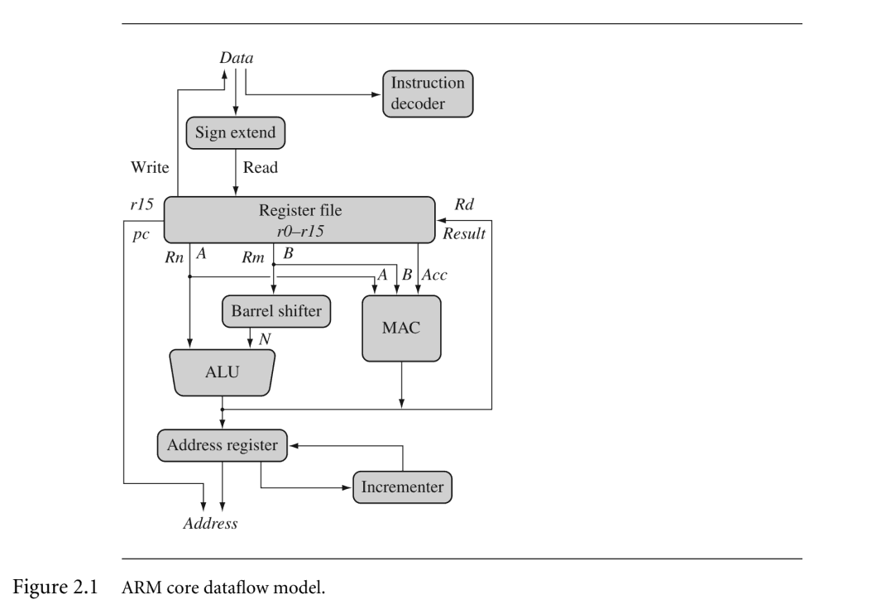
Exception Entry#
{kind=link}
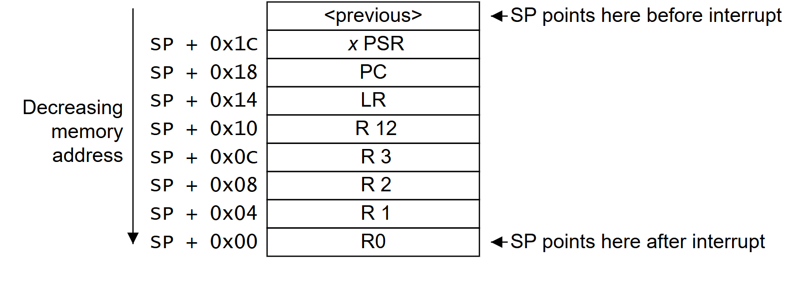
Comments